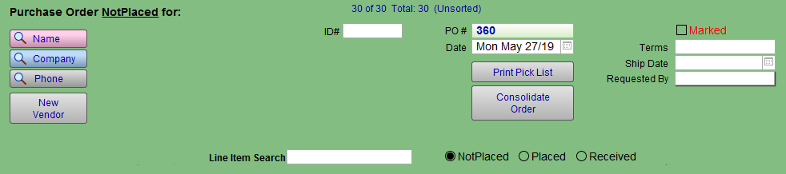
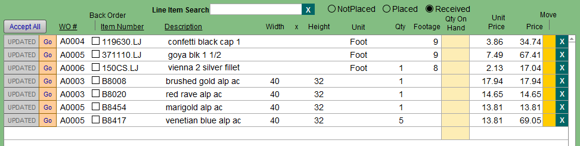
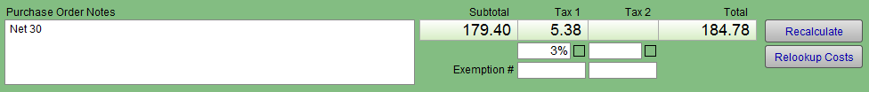

Purchase Orders Form View
Purchase Orders Form View Explained
Top Nav Buttons
Printer Icon Button
-
Generates a PDF version of the Purchase Order to be emailed to a vendor.
Auto-create Frame Order Button
Auto-create Product Order Button
-
Auto-create Product Order is the same as Main Menu > Create Product Order.
New Purchase Order Button
-
Creates a new blank order; the PO number and date are automatically filled in.
-
Item Numbers which correspond with items in the Price Codes or Products file auto-fill in related fields (Description, Price, etc.).

Purchase Order Vendor Section
Line Item Section

Accept All Button
-
Receives all items on the PO, adds the amount received to the Qty On Hand and changes the button from "Accept" to "Updated."
Accept Button (Per line)
-
Click when supplies are received to automatically add items to inventory in the Price Codes or Products files. If you are using the automatic inventory system, then the quantity ordered is added to the quantity in stock. The amount shown in the Footage/Qty field will be added to the Qty field in the Price Codes file. Updated identifies that an item has been received.
-
The item number must exist in the Price Codes or Products file in order for the inventory to be updated. If no match for the item can be found in the Price Codes file or Products file, then the button displays "Not Found." Clicking Accept does not create a new record for the item in any other file; you must manually create the item record in the appropriate file before clicking Accept.
-
FrameReady Multi Site also adds the quantity ordered to the Site 1 inventory field in the Products file, from where it can be re-distributed to the other sites.
Go Button
-
Click to view the Work Order where the line item can be found.
-
Takes you directly to the Work Order of the number shown on the same line. This provides a quick way to double-check measurements, placement, outside dimensions, and other information pertaining to the order.
WO# Field
-
Identifies which Work Order the item is being ordered for.
-
When consolidated, the Work Order numbers are removed for all items (except those with a Unit of Chop or Join.)
Back Order Checkbox
-
Identifies items which were ordered but have not come in.
-
When checked, the item is saved to be automatically added to the next PO for that same vendor. Later, when it is added to a new Purchase Order, the item is removed from the current order.
Item Number Field
-
The number associated with the moulding, matboard, supply, product, etc.
-
The bar code number of a Product (Retail Item) or Price Code item cannot be used to enter the item onto a Purchase Order.
-
The full Item Number must be used when manually entering a product or framing item (moulding, matboard) onto the Purchase Order.
Description Field
-
Usually provided by the Manufacturer and provides a brief identifier of the product.
Width and Height Fields
-
The dimensions to be ordered for matboard, chop, and join frames.
-
Dimensions can be modified on this screen.
Unit Field
-
Box, Each, Foot, Length, Chop, Join or anything else you wish.
-
You may need to enter a value into the Footage field in order to calculate a subtotal for the item.
-
The unity type is entered automatically based on the selection in the Price Codes file.
Note: Although it is sometimes more economical to order supplies by the box, when you click the Accept button the box quantity does not update the Qty field in the Price Codes file. To order by box, select "Box" from the Unit field, enter the Qty of boxes, and change the unit price to the price per box. When the order arrives, you need to find the record in the Price Codes file and manually change the quantity. If ordering other supplies by the box, then change the quantity to the number of sheets or items in the box before clicking Accept.
Qty Field
-
The number of matboards or supplies to be ordered.
-
If the amount in the quantity is a part of a whole, e.g. .25, .5, .75, then we recommended that you change the quantity to a whole number as the Manufacturer will not ship half a sheet of matboard (also, if the decimal is not legible on the faxed order, you may receive 5 matboards rather than 1).
-
When consolidated, the Qty field sums the amounts required for the item and provides the total as a whole number.
Footage Field
-
Calculates the price of moulding being ordered. The amount of length, chop, or join moulding needed is calculated as a decimal.
-
Click in the field to change the amount you wish to order. If the amount in Qty is greater than the amount to be ordered, then you may wish to delete the item and use what is in stock.
Qty On Hand Field
-
The total amount of footage or quantity in your inventory.
-
Only available when using the automatic inventory system.
-
Not modifiable from this screen.
-
If you have the auto-inventory turned on, then the Qty Hand field shows the amount you currently have in inventory now, since the footage or Qty required was deducted when you created the Work Order and clicked on the Work Order Done button.
-
If the amount is a positive number, then you do not need to order the item. You may want to check the inventory if you are concerned about the rail lengths for the frame meeting your needs. The number that displays in the Qty On Hand field shows what you have left in stock without ordering the item.
-
If the Qty On Hand is a negative number, then you did not have enough product in stock and are running at a deficit to fill the order. You need to order this item!
-
If the Qty On Hand is zero, then you have just enough for the order(s). In the case of moulding, it would be wise to check the stock to ensure that they are the right lengths needed.
-
If you are ordering moulding as a Chop or Join, then you still need to order the item regardless of what you have in the Qty On Hand field.
Unit Price Field
-
The wholesale cost of the product. This field does not reflect any discounts you have entered in your Price Codes or Products file.
-
The amount can be modified on this screen, but changes made here will not be reflected on the source record in the Price Codes file.
Move Button
-
Moves the line from this PO to another PO.
-
This operation may only be performed if the alternate PO # already exists.
X (Delete) Button
-
Items available in stock can be easily deleted from the PO.
-
If using the auto-inventory system, you may want to make a physical check before deleting items.
-
Once removed, the action cannot be undone.

Notes Field
-
Useful to indicate information to the supplier (e.g. fillet must fit frame #623).
-
Information entered into the Notes field appears on the printed PO.
Subtotal Field
-
The calculated amount of the items listed above without taxes applied. This field cannot be modified.
Tax Field(s)
-
Tax fields will calculate applicable taxes based on the amount in the Subtotal field and the tax rate entered in Main Menu > Set Up Data.
-
These fields cannot be modified by clicking on them.
-
Taxes will not appear in these fields if you have entered the tax exemption number for your business in the Main Menu > Set Up Data.
-
Each Purchase Order created after entering your exemption numbers will not have taxes applied.
-
To remove the taxes on only one PO, click in the checkbox for Tax1 and/or Tax2. The exemption number appears on the printed PO.
Tax Exemption Fields
-
Tax exemption fields in the New Vendor screen (Contacts file) do not apply to the exemption fields on the Purchase Order screen.
Total Field
-
The calculated amount of the Subtotal and Tax fields.
-
This field cannot be modified.
Recalculate Button
-
Totals the amounts of the order.
-
When manually entering or removing items, use Recalculate to display the new total.
Relookup Costs Button
-
Relookup Costs
© 2023 Adatasol, Inc.